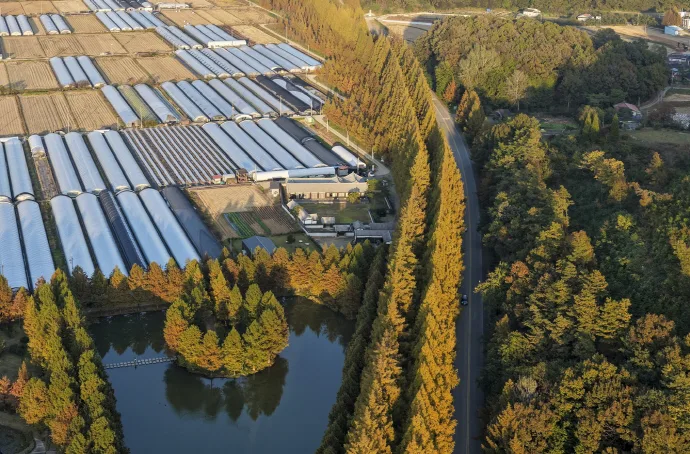
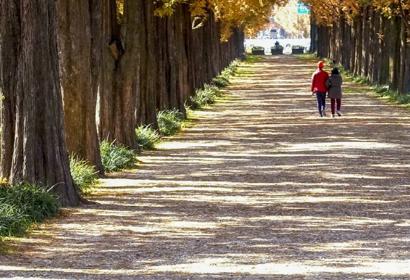
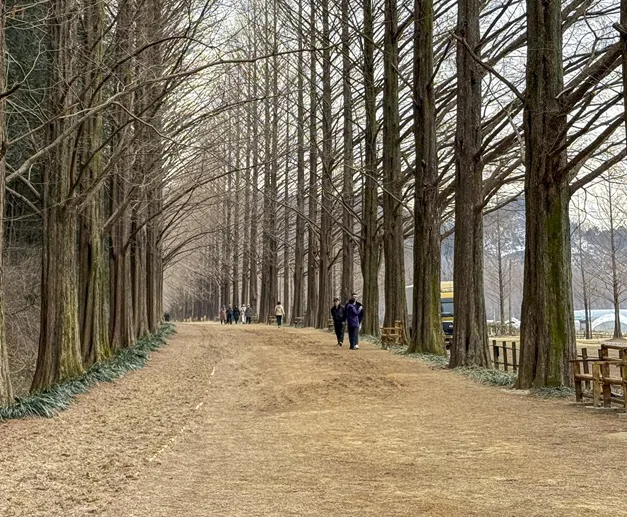

▲ 담양 메타세쿼이아길. 1970년대 초 심은 묘목이 25m 높이로 자랐다
"담양 메타세쿼이아길로 드라이브 가자"는 말에는 함정이 있습니다. 사진으로 가장 많이 보이는 그 구간은 차로 지나갈 수 없기 때문입니다.
가로수길 전체는 약 8.5km입니다. 그중 2.1km 구간이 차량 통제 구역이고, 이 구간이 바로 우리가 아는 그 풍경입니다. 나머지 구간은 실제 도로여서 차로 통과할 수 있지만, 나무 밀도와 터널감은 통제 구간 쪽이 압도적입니다.
1. 묘목 한 줌에서 시작된 길
이 길은 계획된 관광지가 아니었습니다. 1970년대 초 전국적으로 진행된 가로수 조성 사업의 일환으로, 당시 국도 24호선 변에 메타세쿼이아 묘목을 심은 것이 시작입니다. 3~4년생 묘목이었습니다.

▲ 항공에서 본 메타세쿼이아길. 도로 양옆으로만 나무가 늘어서 있다 ⓒ 남도일보
메타세쿼이아는 성장 속도가 빠릅니다. 50여 년이 지나는 동안 묘목은 최대 25m 높이까지 자랐고, 도로 양쪽에서 마주 자란 가지가 하늘을 가리면서 터널 형태가 만들어졌습니다. 현재 이 구간에는 약 1,300~1,500본이 서 있습니다.

▲ 잎이 진 시기의 메타세쿼이아길. 수형과 간격이 그대로 드러난다 ⓒ 남도일보
📍 베어질 뻔했던 길
2002년 국도 확장·포장 공사가 계획되면서 이 가로수들이 벌목 대상에 올랐습니다. 보존 여론이 일면서 도로는 우회 노선으로 새로 내고 기존 구간은 남기는 방향으로 정리됐습니다. 지금 이 길이 "옛 국도"인 이유입니다. 이후 건설교통부 아름다운 길 100선에서 최우수상을 받았습니다.
2. 차로 갈 곳과 걸어야 할 곳
동선은 두 가지로 나누면 간단합니다. 차량 통제 구간 2.1km는 주차 후 걷는 구간이고, 나머지 가로수 구간은 차로 통과하며 보는 구간입니다.

▲ 보행 전용 구간. 노면이 흙길이라 차량 진입이 불가능하다 ⓒ 남도일보
통제 구간은 유료입니다. 입장료는 2,000원이고 만 65세 이상은 무료입니다. 왕복 2.1km는 천천히 걸어 왕복 1시간 내외로, 평지라 부담이 크지 않습니다.
▲ 수면에 반영된 메타세쿼이아. 잎이 진 겨울에 윤곽이 뚜렷해진다 ⓒ 남도일보
계절 선택이 인상을 크게 바꿉니다. 여름은 잎이 빽빽해 터널감이 가장 강하고, 가을에는 잎이 적갈색으로 물듭니다. 겨울에 잎이 다 지면 수형과 간격이 드러나 전혀 다른 길처럼 보입니다. 흔히 여름과 가을만 추천되지만 겨울 구간도 사진으로는 강한 편입니다.
주변을 묶으면 반나절 코스가 됩니다. 담양읍 안에 죽녹원과 관방제림이 가까이 있어, 메타세쿼이아길을 걷고 차로 5~10분 이동해 이어 붙이는 구성이 일반적입니다.
정리하면 이렇습니다. 이 길은 "드라이브 코스"라기보다 차로 접근해 걷는 목적지에 가깝습니다. 그 전제를 알고 가면 현장에서 헤맬 일이 없습니다.